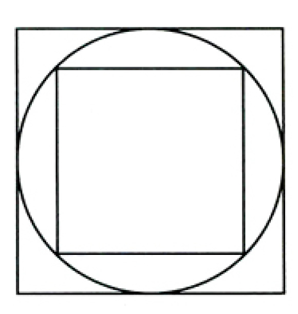

6
Birçok okur hatalı doyllar problemini n sayıda doyla genellemiştir. Her n için en büyük ağırlığın asgarileştirildiği bir dizi ağırlık elde etmek için Conway-Guy sekansı (Tamsayı Dizileri Ansiklopedisi, no M1075) adı verilen bir sekans kullanılmaktadır. Bahsi geçen ansiklopedide sekansı belirleyen ilginç yinelenmeyi ve referans listesini bulabilirsiniz.
Aşağıdaki tablo 1’den 10’a n (doyl sayısı) ile ilgili k sekansını veriyor:
n k
0 0
1 1
2 2
3 4
4 7
5 13
6 24
7 44
8 84
9 161
10 309
Fizikçi Richard Hess, Conway-Guy sekansını n = 106’ya dek yürüten bilgisayar programının verdiği sonuçları yollamıştı.
Conway-Guy sekansıyla arzulanan ağırlık sayısının nasıl elde edileceğini açıklamanın en basit yolu örnek vermek. Problemde kullandığım n = 6’yı ele alalım. Sekansın altıncı sayısı 24’ten önceki sayıları çıkarıyoruz:
24 – 13 = 11
24 – 7 = 17
24 – 4 = 20
24 – 2 = 22
24 – 1 = 23
24 – 0 = 24
Şaşırtıcı ama kalanlar bize arzulanan ağırlık sayılarını veriyor. Bir başka örnek için doyl sayısını 10 kabul edelim. Sekansın onuncu sayısı 309’dan yapılacak çıkarmalar bize 148, 225, 265, 285, 296, 302, 305, 307, 308, 309 ağırlıklarını verecek.
Haliyle tartıda, mesela 567 miligramlık fazladan ağırlık çıkarsa, on ağırlık içeren dizideki sayıları toplayarak bu toplama ulaşmanın tek yolu 265 ile 302’yi toplamak olacağından, 3 ve 6 numaralı kaplarda hatalı doyllar bulunduğunu görmüş olacağız.
6
Richard Hess bana yazdığı bir mektubunda Dr. Moreau’nun kullandığı kabın, elli saat sonunda tüm mikropları içinde bulundurabilmesi için inanılmaz büyüklükte (kilometreküplerce büyük) ya da mikropların bir hidrojen atomundan daha ufak olması gerektiğini belirtmiştir.
8
Bu bulmacayı yazdığımda Neptün’ün halkaları bilinmiyordu. Voyager 1989’da Neptün çevresinde en az üç halka bulunduğunu saptadı.
22
Tanya’nın küçük üçgeni baş aşağı getirmeli “Aha1” çözümü aklıma benzer bir başka problemi getirdi.
Aşağıdaki şekilde gördüğünüz küçük karenin alanının büyüğünkinin tam yarısı olduğunu ne kadar çabuk kanıtlayabilirsiniz?

Bu problemi 1999 yılında Parade köşesinde kullanması için Marilyn vos Savant’a vermiştim. Yanıt yayınlanmadan önce problemi zor yoldan çözmekle uğraşmış bir okur telefon etti. Israrla içteki karenin alanının dıştakinin tam değil, neredeyse yarısı olduğunu söylüyordu. Kareyi aşağıdaki şekilde görüldüğü gibi döndürmesini söyledim.
İçinden saçını başını yolmak gelmiştir herhalde.
30
Wells’in söz konusu öyküsü 1997 yılında editörlüğünü üstlendiğim Körler Ülkesi adlı öykü derlemesinde yayınlandı. Öyküye yazdığım önsözde Wells’in tutturup tutturamadığı öngörülerinin tam listesini verdim.